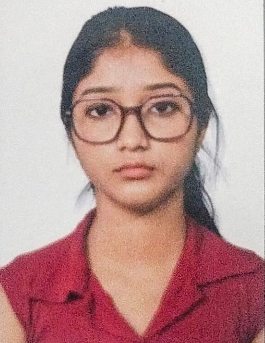

Debalina Dey Sarkar

OBJECTIVE
Enthusiastic and driven B.Tech student (2023–2027) from RCC Institute of Information Technology, currently in 5th semester. Passionate about software development and continuously building skills in full stack web development, C++, and soon expanding into Python, Data Structures & Algorithms (DSA)in C++, and Machine Learning (ML). A quick learner with a strong desire to grow as a software engineer and contribute meaningfully to real-world projects and teams.
EDUCATION
Bachelor of Technology (B.Tech) – Information Technology(IT)
RCC Institute of Information Technology,
Beleghata, Kolkata
Year of Graduation: 2027
WORK EXPERIENCE
Currently seeking internships to gain practical experience.
(Project-based experience and hackathon participation listed below.)
SKILLS
- Frontend: HTML, CSS, JavaScript(learning in progress)
- Backend: Node.js (learning in progress)
- Programming Languages: C++(learning in progress), Python (beginner)
- Tools: Git, GitHub, VS Code
- Soft Skills: Teamwork, Problem-Solving, Fast Learner, Communication
PROJECTS / HACKATHONS
- Hackathon Participation – December 2024
- Participated in a college-level hackathon(ICDMAI)
- Reached 2nd round with team project (certificate awarded)
- Learned project planning, teamwork, and deadline management
CERTIFICATION
- Hackathon Participation Certificate (2024)
- Ongoing course: Full Stack Web Development (Angela Yu, Udemy)
- Learning C++ (CodeWithHarry, YouTube)
- DSA from A2Z Striver Sheet
OTHER
© Debalina Dey Sarakar. Curious mind, constant learner.